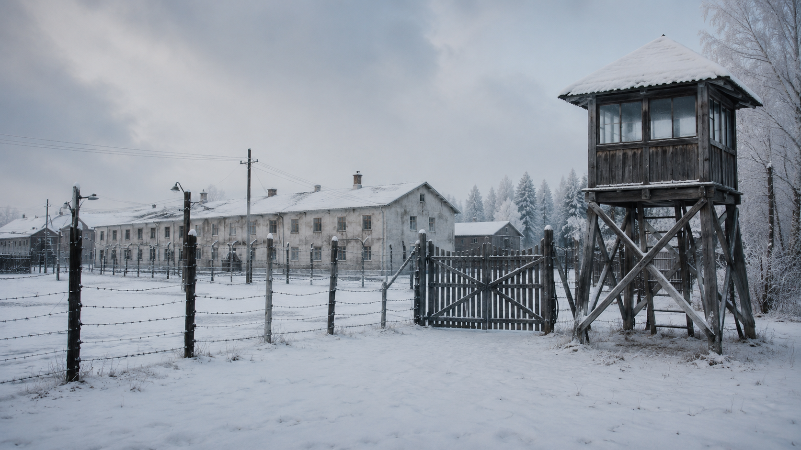

Three words. What is today about?
1. The ⋯ Mountains divide Europe from Asia.
2. The ⋯ river flows through the city of Perm.
3. The ancient tribes of the region were ⋯ peoples.
4. A ⋯ was a spiritual leader who talked to nature spirits.
5. The famous Perm ⋯ style shows bronze bird-men with wings.
6. The Stroganov family became rich from ⋯ mining in Solikamsk.
7. Wooden ⋯ from Perm churches are unique in Russia.
8. The Kungur Ice ⋯ is a natural wonder near Perm.
9. Scientists named a geological ⋯ after the city of Perm.
10. Boris Pasternak turned Perm into the fictional town of ⋯ in "Doctor Zhivago".

Five Things You Didn't Know About Perm
Perm is not on the usual Russian tourist list, but it should be. Here are five reasons why.

Long before Jerusalem became a holy city, a man called Moses led the Jewish people through the desert. They walked for many years.
One day, Moses climbed a mountain called Mount Sinai. There, he received the famous Ten Commandments — ten simple rules from God, like "Do not lie" or "Do not steal". These rules are still important today for Jews, Christians and Muslims.
Mount Sinai is in Egypt. Today, many pilgrims still climb the mountain at night to see the sunrise from the top.
Words are shuffled — say the question in the correct order. Click any word to hear it.

For Christians, Jerusalem is where Jesus spent his final week. They walk along the Via Dolorosa. They visit the Church of the Holy Sepulchre.

For Jews, Jerusalem is the spiritual centre of their faith. The Western Wall is the last piece of the old temple.

For Muslims, Jerusalem is the third holiest city after Mecca and Medina. The Al-Aqsa Mosque is where the Prophet Muhammad went to heaven.
Click a place name (top), then click the matching drop here next to its description.

Every summer, Perm hosts the Diaghilev Festival — one of the most important classical-music events in Russia. Ballet stars, opera singers and orchestras from all over the world come to a small city in the Urals for two weeks. For a long time it was led by conductor Teodor Currentzis and his orchestra MusicAeterna, based right here in Perm. Because of the festival, people in Berlin, Paris and Tokyo now know the name «Perm».
| Use | Structure | Example |
|---|---|---|
| Polite wish | I would like + noun / to-verb | I would like to visit the Wall. |
| Choice of two | Would you rather + verb + or + verb? | Would you rather see the church or the Wall? |
| If… | If + past, would + verb | If I had time, I would visit Bethlehem. |
Western Wall — the last remaining piece of the ancient Jewish temple. People put paper prayer notes in the cracks. Open to everyone, free.
Dome of the Rock — the famous golden Muslim dome. The inside is only for Muslims, but the outside is one of the most photographed places in Jerusalem.
Falafel — crispy fried chickpea balls, usually inside a pita with salad and tahini sauce. Quick, hot, street-food vibe.
Hummus — creamy dip made of chickpeas and tahini, eaten cold with warm flatbread. Slower, more like a small meal.
Christian Quarter — narrow stone streets, churches, the Via Dolorosa, the Holy Sepulchre. Quieter in the morning.
Muslim Quarter — the biggest of the four, loud markets (souks), spices, sweets, more crowded. Best in the first half of the day.
Sunrise — soft golden light from the Mount of Olives, very few people, peaceful. You need to wake up at 4–5 a.m.
Sunset — the walls glow orange, romantic, many tourists. Easier to fit into a normal day.
Inside the walls — old guesthouses, stone rooms, sometimes no lift. You feel history outside your window — but nights can be noisy.
Modern hotel outside — air-conditioning, swimming pool, comfort. You lose the late-night atmosphere of the Old City but sleep much better.
Religious guide — talks about prayers, rituals, what believers feel. Stories from inside the faith.
Historian — talks about who built what and when, archaeology, real events. Less emotion, more facts.
One day — Old City + the three big sites + a market. You catch the highlights, but everything feels rushed.
One whole week — Bethlehem, Mount of Olives, Yad Vashem, Jerusalem at night, plus day trips. You go deeper but need more time and money.
| Modal | Meaning | Example |
|---|---|---|
| must | strong obligation | You must cover your shoulders. |
| mustn't | prohibition | You mustn't take photos inside. |
| should | advice | You should visit at sunrise. |
| might | possibility | It might rain later. |
| could | possibility / polite request | We could start at Jaffa Gate. |
A Pilgrim's First Day · choose the modal:
Short answers using lesson vocabulary.
Repeat the 7 "Would you rather" prompts from section 12 — now spoken aloud. Full sentence + 2 reasons.
Choose 2 prompts and speak for 2-3 minutes on each.

See: altar, cross, candles, stained glass, pews.
Do: sit, sing, light candles, kneel.

See: mihrab, dome, prayer mats, Arabic calligraphy.
Do: must remove shoes, wash hands, kneel facing Mecca.

See: Torah ark, menorah, Star of David.
Do: should cover the head, read from the Torah, pray in Hebrew.

The Dead Sea is the lowest point on Earth — about 430 metres below sea level. Its water has almost 30% salt, ten times more than any ocean. People come here for one reason: the water and the black mud are full of minerals that are good for the skin. It is a natural beauty centre.
Israeli cosmetic brands like Ahava, Premier and Sea of Spa use Dead Sea minerals in their products. They are sold all over the world.
Another famous beauty oil comes from a different place — Morocco. It is called Argan oil (or "liquid gold"). It is made from the nuts of the Argan tree and used for skin, hair and nails. Many world beauty brands use it.

Israel is sometimes called "the Silicon Valley of the Middle East". It is a small country, but it has thousands of startups and many world-famous inventions.
Three areas stand out: cybersecurity (protecting computers from hackers), medical technology (new tools for hospitals) and agriculture (clever ways to grow food in the desert — for example, drip irrigation, which saves water).
Tel Aviv, the country's biggest modern city, is the centre of all this. Young engineers come here from all over the world.

Companies like Check Point and Wix protect millions of computers around the world from hackers and viruses.

Israeli inventions help doctors — for example, the PillCam, a small camera you swallow to check your stomach without surgery.
Drip irrigation was invented in Israel. It uses very little water and helps farmers grow food in dry places like deserts.

In the 12th century, Jerusalem was at the centre of the Crusades — a long war between Christian and Muslim kingdoms.
One of the most famous people of this time was Baldwin IV, the king of Jerusalem. He became king when he was only 13 years old. He had a terrible illness called leprosy, and later he had to wear a silver mask to hide his face. Because of this, people called him "the Leper King".
But Baldwin was brave. Even sick, he defended Jerusalem from the Muslim leader Saladin. He believed in peace between religions and made a famous treaty with him.
His story is told in the film "Kingdom of Heaven" by Ridley Scott (2005). Many parts of the film are real history.
Vocabulary: crusade — religious war · kingdom — country with a king · leper — person with leprosy · siege — when an army surrounds a city · treaty — peace agreement · courage — bravery · defend — to protect.